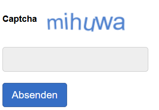

Captcha bei der Ergebniseingabe
Bei der Eingabe der Ergebnisse der Potenzialanalyse auf potenzialanalyse.sachsen.de kann die Firefox-Erweiterung Mieru OCR hilfreich sein. Sie automatisiert die Texterkennung in Bildern (Captcha-OCR). Die Verarbeitung erfolgt lokal und kostenfrei. Nach der Eingabe sollte die Erweiterung im Firefox-Erweiterungsmenü wieder deaktiviert werden, um Rechenressourcen zu sparen.

Ohne Gewähr.